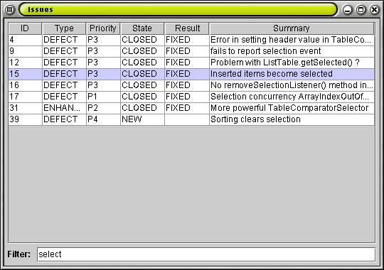

In part three of this tutorial we add a widget to filter the list of issues.
This widget is a simple JTextField and is inspired by a similar
widget found in Apple iTunes. As the user types
text into the field, only rows that contain that text are shown. This is a fast
and easy way to find a needle in a haystack!
To add filtering to our issues browser, we first need to access the filter
text is for each list element. We can do this by implementing either the
TextFilterable interface or the TextFilterator interface.
TextFilterable requires the filtered objects to include the method
getFilterStrings(). Alternatively, the Filterator
interface can be used to externally specify filter strings. For our issues
browser, we will implement getFilterStrings() in our Issue class.
|
Just as we have transformed our source list to be sorted, we will transform the
sorted list to be filtered. The JTable will display the filtered list
which is already sorted. We will also add the filter editing JTextField
to our panel.
|

We have added filtering to our issue browser without having
to be concerned with sorting, display or changes to the source list.
| << Part 2 | Tutorial Home | Part 4 >> |
|---|